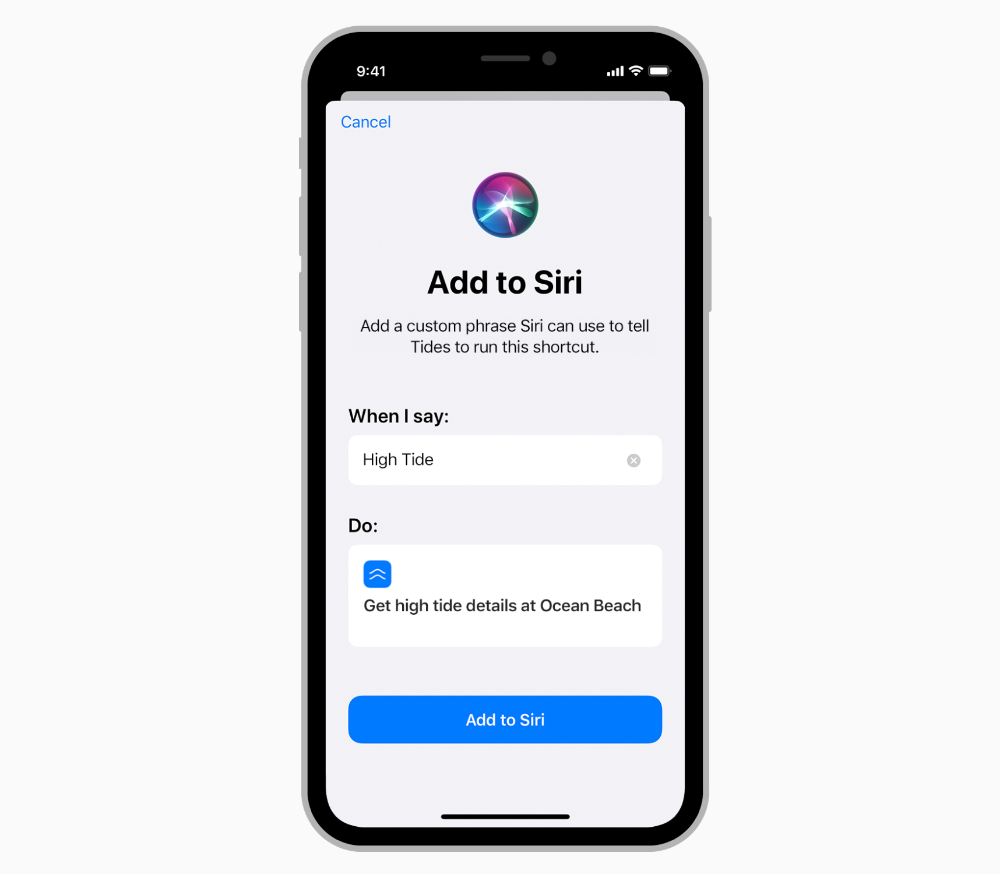
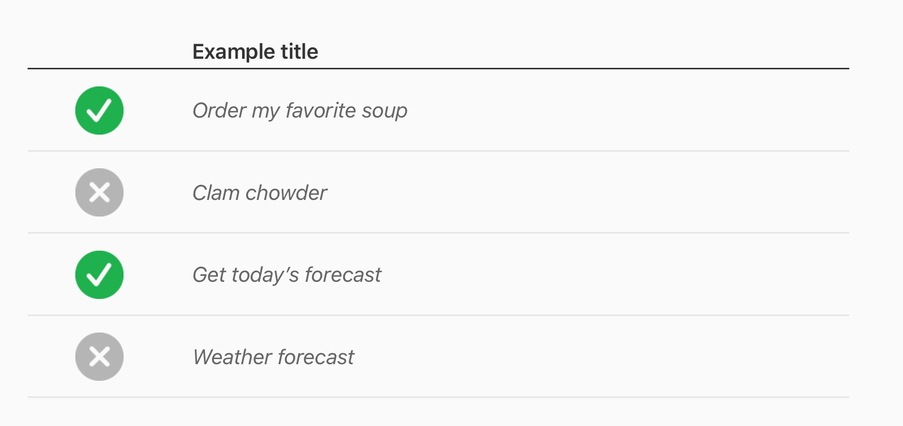

SiriKit 包含了 iOS 和 watchOS 上的 app 可以调用 Siri 的领域以及可能的用户意图，并进一步将用户经常使用的功能扩展为 Siri 捷径。这篇文章将通过 HIG 来深入了解 SiriKit 的基本功能和各方面的设计规范与细节。
目录
领域和意图
如果你的 app 提供了特定目录的服务（称之为领域），如健康、信息、支付或者订车，它就可以与 Siri 结合响应口头的命令和问题以让用户执行某些动作（称之为意图）。Siri 负责处理需要把这些口头语言转化为你 app 可以处理的指令的所有的语言处理和语义分析过程。你的 app 定义它支持的人物，确认它接收到的信息，给 Siri 提供信息以显示并执行动作。
iOS 和 watchOS 的 app 可以适配 SiriKit 框架以让人们使用 Siri 和捷径在 Apple Watch、HomePod、iPad、iPhone 甚至是通过 CarPlay 去执行 app 指定的动作。SiriKit 支持 iOS 和 watchOS 的下面这些领域和动作：
增加准确度
- 定义人们会在 app 内使用的自定义词汇：通过定义人们可能会在请求中使用的特定术语，如账户名字、联系人名字、照片标签、照片专辑名字、搭车选项和锻炼名字，帮助 Siri 学习跟过关于你 app 可以执行的动作。这些术语应该是不普遍的，对于你的 app 是独一无二的。不要包含其他 app 的名字、明显与其他 app 有关的术语、不合适的语言或者预留短语，如「Hey Siri」。记住任何你定义的术语会被 Siri 用来帮助分析请求，但不保证它们被识别。
- 考虑定义其他的 app 名字：如果人们对于你的 app 的名字有不同的发音，你可以提供一个替代名字的清单以增加在让 Siri 将目标对准你的 app 时的灵活度。例如，一个叫「UnicornChat」的 app 可能会定义术语「Unicorn」作为一个替代的 app 名字。不要使用其他 app 的名字作为你的 app 的替代名字从而去冒充它们。
- 提供请求样例：给 Siri 提供样例短语以在 Siri 界面中点击帮助按钮会显示的引导中展示。使用这些短语教人们最容易和最有效的方式通过你的 app 使用 Siri。
Siri 捷径
任何 app 都可以提供捷径以马上执行有用的动作，或者打开 app 跳转到特定的屏幕，用户可以快速开始任务。

捷径的类型
SiriKit 支持几种捷径的类型。
Donated Shortcuts 贡献型捷径
贡献型捷径是用户会有规律执行并可能会再次执行的 app 的特定的动作。例如，一个用户可能会使用一个订购汤品 app 在每周五的中午订购蛤蜊杂烩汤。这个 app 可以把这个动作当做一个可预测的用户行为，向系统贡献一个「订购我最喜欢的汤品」的捷径。使用像是位置、一天中的时间和动作类型（如在走、在跑、在开车）这些信号，系统可以智能地预测捷径正确的时间和位置。系统可以通过一个 iOS 锁屏通知、搜索结果、锁屏上的媒体播放控制（针对于媒体播放型捷径）或者是 Apple Watch 上的 Siri 表盘提供捷径给用户。
Suggested Shortcuts 建议型捷径
建议型捷径是用户没有执行过但可能仍有用的 app 特定的动作。例如，如果一个订购汤品 app 的用户从来没定过汤品，app 可能想要通过一个「订购汤品」的捷径给用户一个方式做到这一点。在这个例子中，app 在 iOS 捷径 app 中提供了一个建议型捷径。一个 app 也可以展示一个添加到 Siri 按钮以直接在 app 中启动一个建议型捷径。
Relevant Shortcuts 相关型捷径
相关型捷径是用户从来没有执行过，但包含像是位置、一天中的时间这样的信息的 app 特定的动作。这些捷径会在 Apple Watch 的 Siri 表盘上被智能地展示在合适的时间和地点。
设计捷径的最佳实践
- 提供可以加速普遍的、有用的活动的捷径：利用好人们对 app 的熟悉，为那些人们会经常做的动作创造捷径，不要为人们只可能做一次的动作创造捷径。
- 通常情况下，为那些不是太复杂的人物创造捷径：人们会从可以减少复杂任务的多个步骤的捷径中受益最多。不要要求人们参与一个 app 中的长时间对话，这会毁掉捷径带来的益处。你可以通过让捷径清晰地定义任务来减少用户错误的可能性。
- 设计寿命长的捷径：避免提供特定日期或者与临时数据相关的捷径。例如，一个旅行 app 可能不应该为每个特定的旅行行程都提供一个捷径。更好的解决是让人们通过一个个的问题从所有接下来的旅行中做出选择。
- 提供不被情景所限的捷径：人们可以通过不同的方式、在不同的时间、使用不同的设备来运行捷径。无论什么方法、何时何地都能成功运行的捷径才能创造好的体验。例如，一个锻炼 app不应该贡献一个「结束锻炼」的捷径，因为当用户没有在锻炼时捷径被建议会是一个糟糕的体验。
- 在你的 app 中不要在提供 Siri 捷径前就请求用户使用 Siri 的许可：如果你的 app 只支持 Siri 捷径，在让用户创造和使用捷径前你不需要获得使用 Siri 的许可。获取许可会给用户造成分歧，会打击用户使用捷径的信心。
- 可用时使用系统意图：如果内建的 SiriKit 意图代表了你的捷径的目的，适配那个意图而不是定义你自己的自定义意图。例如，如果你想提供一个发送信心的解决，适配「INSendMessageIntent」意图就好。如果你想提供一个播放媒体的捷径，适配「INPlayIntent」意图。
- 提供后台操作：最好的捷径可以快速运行，不会让人们从当前的情景中脱离。努力支持可以在后台运行而不需要把 app 带到前台的捷径。这样做也确保人们可以在不用手、不用看的情景中完成捷径的任务。
- 选择一个最匹配你的捷径任务的意图分类：一个分类告知系统一个捷径的通用功能，比如创造、订购、分享或者搜索。当系统提供了一个捷径或者使用 Siri 调起捷径时，这会影响呈现给用户的文本、图标、口语对话。
贡献捷径
- 针对普遍的用户动作做出贡献：用户每次执行一个动作时都应该进行贡献，不只是第一次，这可以帮助系统更准确地预测提供捷径的最好时间和地点。
- 如果你的 app 需要处理预订，考虑贡献给系统：像是订票事件或者预订餐馆、航班、电影和其他旅行日程的项目会自动作为建议出现在日历和地图 app 中。例如，贡献预订可以出现在锁屏上，比如建议通过你的 app check in 或者作为一个提醒基于当前的交通状况告诉用户什么时候该离开。确定只在人们活跃地查看特定预订的详细信息时贡献预订信息。在其他时候贡献预订（例如人们搜索或者查看所有预订清单时）会让人惊讶，因为当系统在你的 app 中探测到一个新的事件时会展示一个通知横幅。
- 只为那些用户实际执行的动作贡献捷径：不要贡献用户从来没做过的捷径。例如，如果用户从来没有订购过汤品，一个汤品订购 app 不应该贡献订购汤品捷径。
- 使用相符的数据移除贡献：如果一个贡献型捷径要求的信息不再存在，你的 app 应该删除贡献，捷径就不会再被建议。例如，如果一个用户在一个信息 app 中删除了一个联系人，任何给那个联系人发送信息的捷径也应该被删除。一个用户必须手动移除他们自己添加到 Siri 的捷径。
创造捷径的标题和副标题
当捷径被系统建议、添加到 Siri 或者用户编辑的时候，捷径的标题和副标题会出现。
- 保持简洁，但是是描述性的：一个标题应该清晰地传达当捷径运行时会发生什么。一个副标题可以提供补充标题但不是重复标题的额外细节。
- 标题使用首字母大写的句子样式，不需要使用末尾标点符号，用一个动词开头：把捷径的标题看做是一种指导。

- 重要的信息放在前面：取决于设备的屏幕尺寸，过长的标题和副标题在某些情景中可能会被缩短。
- 排除 app 的名字：系统已经通过捷径的关联识别到了是哪个 app。
- 只在提到捷径使用的特定短语时使用引号：例如下图这些例子。

- 本地化标题和副标题：使用多种语言提供内容可以确保全世界的人们都获得一样的好的体验。
Siri 捷径的建议短语
你的 app 可以为 Siri 捷径提供设置期间的默认短语。当添加建议的捷径到 Siri 中时，人们可以设置个性化的短语。
- 让建议短语保持简短和容易记住：记住人们必须要说出你的短语，所以太长或让人困惑的短语可能会导致错误和失望。理想情况下，短语应该包含两到三个词。再多的词语人们就很能记住，太长的短语会被删节。
- 确保你建议的短语是准确特定的：像是「再订一次咖啡」或者「订我的日常咖啡」这样的短语清晰地描述了捷径是做什么的，这会让人们更容易在之后更容易记住短语。也确保你的建议短语对于每个捷径范围是特定的，例如，「看棒球比赛」比「看比赛」更清晰、更容易被记住。然而，建议短语不应该暗示自然语言理解。例如，一个像是「订购一份大的蛤蜊杂烩汤」的短语可能会导致某些人认为他们可以使用一个像是「订购一份小的龙虾浓汤」变种。
- 不要征用关键的 Siri 命令：例如，你的 app 不应该建议一个像是「拨打 110」这样的短语，或者是包含文本「Hey Siri」。
包含捷径图片
呈现给用户的捷径包含一张图片可以给出额外的视觉情景。默认情况下，图片是你 app 的图标。
- 为了达到更吸引人的体验，使用自定义的图片：例如，「订购我喜欢的汤」这个捷径可能会展示用户最喜欢的汤的碗。当人们在捷径 app 中搜索时，提供特定动作的图片和定义核心参数可以让人们更容易发现你的捷径。
- 提供正确尺寸的相关的捷径图片：在 44mm Apple Watch Siri 表盘上出现的图片应该是 68px × 68px（34pt × 34pt @2x）。对于更小的手表，系统会自动缩放。
提供一步步的问题
捷径可以提供一步步的问题，即时优化结果，让人们通过一个捷径做到更多。例如，如果你提供了一个「订购我的日常咖啡」捷径，你可以通过问人们问题，像是什么尺寸、哪个位置或者你日常订哪一个，来帮助他们得到他们想要的。
- 设计要求尽可能少的一步步问题的捷径：一个捷径可以不用一步步的问问题就可以完成一个请求。虽然一步步的问题让捷径更灵活，但是你并不想强制人们进入一个很长的交互。在大多数的例子中，最好是提供一两个一步步问题就好。
- 确保每一个一步步的问题都是有意义的：理想情况下，每一个一步步问题都帮助人们做出一个重要的选择。如果你呈现的选项或者是问题本身太粗糙或者太相似，对话就会变得重复，人们使用你的捷径会感到有太多工作要做。
- 当可以说清楚时支持链式的一步步问题：例如，一个帮助人们订餐的 app 可能提供了自取或者送货上门的选项，但只在用户选择送货上门时询问用户的特定位置。
- 预定义有用的默认选项：当人们添加捷径到 Siri 时，他们可以改变一步步问题的参数。你可以让人们基于用户的当前使用场景通过设置默认值更容易做到这些。你可以提供一个「再次订购汤品」的捷径，其带有询问人们特定订单的一步步问题。当人们从订单的详情页面添加这个捷径到 Siri 时，你可以预配置这个捷径以博涵那个特定的订单。
- 考虑提供动态的选项：例如，如果你的捷径依赖于位置，你可以通过提供离用户最近的选项帮助确保准确最新的结果。你也可以在人们第一次添加捷径到 Siri 时提供动态选项。
- 帮助人们理解错误和失败：例如，如果你询问了让人们选择味道的一步步问题，若用户的选择卖光了你需要提供一个有用的答复。系统可以为像是达到了最大值或最小值这样的情况提供默认错误提示，但你应该根据你解决的任务为错误量身定制。例如，如果鸡肉面条汤卖完了，可以回复用户一个错误提示「对不起，鸡肉面条汤卖完了」，而不是「对不起，我们不能完成你的订单」。
- 确保你的捷径在每一个情景中都可以运行良好：让人们容易运行你的捷径，不管他们是如何启动的。例如，你应该为在设备上没有屏幕，只使用他们声音运行捷径的人做好准备，也为从锁屏或者 Apple Watch Siri 表盘建议或者从搜索结果或者在一个多步骤捷径中运行做好准备。
让人们添加和编辑捷径
人们可以在捷径 app 中添加、编辑、删除捷径，但是你也可以在你的 app 中呈现这些功能。
- 提供一个添加到 Siri 按钮让人们可以为一个普遍的动作添加捷径：当用户点击按钮时，标准捷径页面会出现，允许用户录制一个自定义的声音命令并添加捷径。在捷径被添加后，按钮的文本会自动改变成已添加到 Siri，录制的触发短语也会显示在上面。这些改变告诉人们成功添加了捷径，更重要的是提供他们当让 Siri 运行捷径时该说什么。如果你让人们在你的 app 中为几个动作创造了捷径，你可以使用一步步问题整合这些动作或者在一个屏幕上展示多个捷径。
- 适用添加到 Siri 按钮的可变宽度：在不同位置和更新到展示用户的调起短语时，按钮的宽度会发生变化。
- 在添加到 Siri 按钮周围保证清晰的空间：在按钮四周，最小留出按钮高度的 1/10 间距。
- 如果你创造一个自定义的添加捷径按钮，提供和系统按钮一样的体验：你的自定义按钮应该展示短语「添加到 Siri」。不要展示像是「添加声音命令」、「创造声音捷径」、「创造声音提示」这样的短语，不要在你的自定义按钮上展示 Siri 图标。也不要使用 Siri 图标作为按钮，或者在你界面的其他地方展示它。在人们使用你的自定义按钮添加捷径之后，展示录制的调起短语对于帮助人们记住它很重要。对自定义按钮，你可以跟随系统提供的体验，更新按钮显示已添加到 Siri 和短语。
- 让人们编辑和移除已添加的解决：在添加一个捷径之后，当用户点击显示在你 app 中的调起短语，再次显示标准的捷径界面，这样用户就可以重新录制短语或者删除捷径。
- 让 app 中显示的任何捷径保持最新：人们可以在设置-Siri 和搜索中添加、删除、更新你 app 的捷径。然而，当发生改变时设置不会通知你的 app。让界面与最近的捷径改变保持最新是你 app 的责任。
添加到 Siri 按钮样式
添加到 Siri 按钮有几种视觉样式可用。你也可以自定义按钮的圆角半径以搭配你的 app 的界面。

- Black 黑色：在白色或者提供充足对比度的浅色背景上使用。不要再黑色和深色背景上使用。
- Black with outline 有轮廓的黑色：在深色或者提供充足对比度的带色背景上使用。不要在白色或浅色背景上使用。
- White 白色：在深色和提供充足对比度的带色背景上使用。
- Whit with outline 有轮廓的白色：在白色或者不能提供足够对比度的浅色背景上使用。不要在深色或饱和背景上使用。
提供多个 Siri 捷径
如果你的 app 包含好几个 Siri 捷径，考虑一块 app 的专用区域展示它们。一块专用的区域可以让人们容易一眼看到你 app 所有的捷径，并添加他们想使用的捷径。另外，考虑提供一步步问题以支持一个捷径的一系列额外选项。
- 对你的捷径列表使用一个不模糊的标题：例如在导航栏上使用标题「Siri 捷径」可以清晰地表达这一个界面的目的。
- 考虑创造一个自定义的添加按钮用于捷径列表：当在一个界面中被用到多次时，系统提供的添加到 Siri 按钮会添加太多的视觉比重。如果一个界面上的列表里全是 Siri 捷径，你可以为列表中的每一个捷径显示一个简单的添加按钮。

- 当一个捷径被添加时提供反馈：通过替换添加按钮为编辑按钮、展示他们录制的短语，告诉人们他们已经成功地添加了捷径。或者，你可以移除添加按钮，让人们点击他们录制的短语以打开一个编辑界面。
答复
当某个人使用 Siri 去执行你 app 中的一个动作时，你的 app 可以在 Siri 中提供一个自定义的界面展示可以执行的选项。在动作被执行后，你的 app 可以响应那个信息或者表明确认、成功或失败。你的 app 也可以通过可以被 Siri 读出的自定义的对话的形式提供答复。
- 让 Siri 交互更中立：你可以在整个捷径体验中自定义 Siri 会讲什么，包括一步步问题的控制。尝试写一个脚本并与其他人演绎来看看你的对话在实践中的感受是如何。用这种方式体验自定义对话可以帮助你找到交互不中立的地方。
- 保持相关、准确：让你的 app 的答复与用户的当前请求和期望相关。例如，如果用户请求 Siri 用你的 app 发送一条消息，那就发送一条消息，不要执行不同的动作。
- 在 Apple Watch 上，设计一个要求最小交互的流线化的工作流：你的 app 不能为 Siri 提供一个可以在 Apple Watch 上显示的自定义的用户界面。作为结果，你的 app 的 Siri 体验应该是流线化的、最小化的。任何可能的时候，使用智能默认选项而不是请求输入。例如，交通分享 app 可能自动默认上次请求的交通方式，或者一个健康 app 可能默认为一个最喜欢的锻炼。如果你要给用户呈现选项，提供有效的、聚焦的可以减少额外提示可能性的选择。任何可能的时候，自动完成任务。例如，watchOS 的信息 app 可以自动发送信息，除非不要发送的按钮被点击。
- 快速响应：人们为了便利使用 Siri，期望回复越快越好。
- 任何可能的时候，完成请求时不要离开 Siri：如果一个请求必须在你的 app 中完成，把用户直接带到期望的地方。不要展示一个中间屏幕或者信息，这会拖慢整个体验。
- 当一个请求会对财产有影响时，默认选择最安全和最便宜的选项：不要欺骗用户或者是歪曲信息。对于有多个价格等级的购买，不要默认选最贵的。在用户付款时，不要在没通知用户时付掉额外的费用。
- 让选项列表尽可能简短，把这些条目通过一种讲得通的方式排序：虽然一步步问题让捷径更灵活，但给人们太多选项会让复杂的任务变得很繁重。当你决定是否要包含一个条目时，考虑它的复杂度和实用度。例如，在一个订餐 app 中，独立的菜单条目比每个条目包含好几种食物的菜单能让人们更容易从句法上分析。在你识别出一部分有用条目之后，考虑按照时间、频繁度或者流行度来排序它们。
- 只在讲得通时请求确认：一个捷径可以在完成任务之前或停止回答一步步问题时请求用户确认。有财产影响的 app 应该在完成订单之前请求确认。另一方面，你应该避免请求用户确认一个一步步问题的回答，除非提供的答案有疑问或者很难懂。在这两种情况下，避免请求确认超过一次。
- 考虑让人们在 app 中查看更多选项：如果选项列表不包括用户所需要的，你可能需要包括一个选项让用户打开你的 app 查看更多。在列表中，你可以使用像是「在 XX app 中查看更多」这样的话，在口语对话中，你可以顾里用户直接说「更多选项」。
设计一个自定义的 Siri 界面
- 确保你的界面与 Siri 完美融合：使用你 app 的颜色、图片和其他设计元素去表达你的品牌是可以的，但任何界面元素应该感觉像是属于 Siri 的。除非你的 app 需要一个完全的自定义界面，否则把你的内容与 Siri 提供的默认界面结合在一起就好。
- 提供充足的边界和间距：避免让内容跑出界面的边界，除非内容看上去像是自然跑出屏幕的，像是地图。通常情况下，在界面和内容之间提供至少几个像素的边界。使用在界面顶部的 app 图标作为对齐规范。当内容与图标的中线对齐时，内容一般都会表现得很好。
- 最小化你界面的高度：理想情况下，你的界面应该不高于屏幕的高度，这样用户能够不需要滚动就可以看到所有的内容。
- 不要创造看上去可以交互的界面：当你的界面在 Siri 中显示时，它不能响应事件或者手势（除了可以打开你 app 的点击动作）。因为这个原因，避免展示多个图片、形状或者看上去可交互的元素很重要。你可以最多展示一个按钮打开你的 app 跳转到人们可以执行额外动作的界面。例如，一个自定义的订单确认界面可以展示一个编辑按钮以打开 app 并让人们改变订单的一些选项。
- 不要在界面中包括 app 名字或者图标：系统会自动展示这些信息。
写下口头答复
- 争取让声音答复可以像自定义 Siri 界面一样吸引人：记住人们可能会不看屏幕从他们的 HomePod 上、在 AirPods 上使用「Hey Siri」或者通过 CarPlay 执行 app 的动作。在这些情况下，无论人们怎么与 Siri 进行交互，声音答复应该传达与视觉元素展示相同的核心信息，以确保人们可以获得他们所需要的。
- 创造简洁、可描述、在声音驱动场景中运行良好的声音答复：通过一个捷径标题，一个自定义的口头答复应该清晰地传达捷径运行时发生了什么。如果你问了一步步的问题，确保自定义的默认对话是清晰的。例如，「哪一个汤？」会比「哪一个」更清晰。
- 避免没必要的重复：人们倾向于频繁地运行捷径，所以当回答一步步问题或者处理错误时，他们可能会听到相同的提示多次。使用当前对话的场景移除掉尽可能多的提示细节。避免包括没必要的连篇累牍或者幽默的尝试，因为这两者随着时间都会让用户恼怒。
- 帮助 Siri 中立：人们总是会通过不同的方式与 Siri 交互，例如选择一个列表条目时会说「第二个」或者「大的」、「小的」，而不说词语碗。当你通过给系统提供替代的术语和短语来支持 app 特定的同义词，你可以让人们的 Siri 交互更加自然。考虑通过提供 Siri 可以说的替代的对话选项增强清晰度。例如，汤品订购 app 可能会展示一个菜单列表像是「一份蛤蜊杂烩汤」、「一份蛤蜊杂烩汤和一份番茄汤」，讲出这些选项时可以说「哪一个选项？那个只有蛤蜊杂烩汤的还是那个包括番茄汤的？」
- 排除你的 app 名字：当相应用户时，系统会在口头上和视觉上提供你 app 的属性。在口头答复中包括你的 app 的名字是多余的，可能会让与 Siri 的交互体验感到没那么中立。当人们使用一个捷径好几次时，Siri 就不会那么频繁地说出 app 的名字，因为提醒人们哪个 app 在响应已经没必要了。
- 不要尝试模仿或者操纵 Siri：你的 app 不应该冒充 Siri，不应该尝试重造 Siri 提供的功能或者提供一个像是来自于 Apple 的答复。
- 保持合适，遵照父母控制。不要展示无礼或降低身份的内容。记住许多家庭使用父母控制以限制露骨的内容或者基于特定分级的内容。
- 不要使用个人代词：内容应该是包括所有人。
- 保持相应与设备无关：人们可能使用 Siri 与 Apple Watch、HomePod、iPad、iPhone或者 CarPlay 上的 app 进行交互。如果你必须提供特定设备的功能，确保它清晰反映了用户的当前设备。
- 通过 Sir 和捷径强调你的 app：提及 Siri 和捷径应该比你的 app 名字和身份更不重要。
- 不要做广告：内容不应该包含广告、市场营销或者 app 内购买促销。
编辑规范
提到 Siri 和使用 Hey Siri
- 不要使用像是她、他这样的词语提及 Siri：理想情况下，只使用词语 Siri。例如，「在添加一个捷径到 Siri 之后，你可以在任何时候通过请求 Siri 运行捷径」。
- 当使用术语「Hey Siri」时使用正确的大小写和标点符号：「Hey Siri」是两个单词，斜体或者使用引号，H 和 S 大小。不要省略这个术语。
- 在一个本地化情景中，只翻译词语「Hey Siri」中的单词「Hey」：作为一个苹果商标，Siri 不需要被翻译。下面是一份可以被接受的「Hey Siri」的翻译列表。
提到 Siri 捷径
- 当提到 Siri Shortcuts 时，两个单词的 S 都要大写，并确保捷径这个单词是复数：例如「Siri Shortcuts provide a quick way to get things done in your app with just a tap or by asking Siri.」
- 当提及单独的捷径时（不是指功能本身或者捷径 app），使用小写：例如「Run a shortcut by asking Siri or tapping a suggestion on the lock screen.」
- 当描述人们是如何在你的 app 中使用 Siri 捷径时使用正确的术语：用户通过请求 Siri 运行捷径，所以你的用词应该与像是「Run a shortcut by asking Siri」或者「Run the shortcut by asking Siri with your personalized phrase」这样的词语相似。为了鼓励用户创造并使用捷径，避免使用像是「添加声音捷径」、「创造声音命令」、「创造声音提示」或其他变种这样的短语。你可以使用下面短语中的一个：
- Add to Siri
- Add a shortcut to Siri to run with your voice
- Add a shortcut to Siri to run anytime by asking Siri
- 在本地化情景中提到它们时，使用你 app 名字和单词捷径的翻译，但不要翻译 Siri：例如，当在设置-Siri 和搜索-我的捷径中提及特定捷径时，使用捷径的翻译版本。
提到 Apple 产品
- 遵守 Apple 商标规范：Apple 商标不应该出现在你 app 的名字和图片中。在文本中，像 Apple 商标列表中展示的那样使用 Apple 产品名字。
- 只使用单数形式的 Apple 商标名字，不要使用 Apple 商标名字的所有格；
- 不要翻译 Apple、Siri 或其他的 Apple 商标；
- 不要使用分类描述词，例如要说 iPad，而不是平板电脑。
- 不要表明任何形式的来自 Apple 的赞助、合作、支持。
- 任何你 app 中法律信息出现的地方，都要把 Apple、Siri 和其他 Apple 商标放在正确的地位上。
- 只在技术规格或者兼容描述中提到 Apple 设备和操作系统。
更多的请参阅使用 Apple 商标的规范。
继续阅读
通过 SiriKit 了解了 app 可以发挥的领域，了解了这么多设计规范和细节之后，继续阅读 Siri 捷径从设计到捷径第二篇 - 设计绝佳的 Siri 捷径，通过一个实际例子一步步地从细节上去设计 app 的 Siri 捷径。
参考链接
- Domains and Intents - SiriKit - Human Interface Guidelines - Apple Developer
- Siri Shortcuts - SiriKit - Human Interface Guidelines - Apple Developer
- Responses - SiriKit - Human Interface Guidelines - Apple Developer
- Editorial - SiriKit - Human Interface Guidelines - Apple Developer
- Designing Great Shortcuts - WWDC 2019 - Videos - Apple Developer
- Building Great Shortcuts - WWDC 2019 - Videos - Apple Developer
如果你觉得这篇文章对你有所帮助，欢迎请我喝杯咖啡，感谢你的支持😁